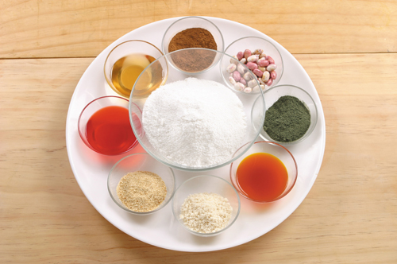
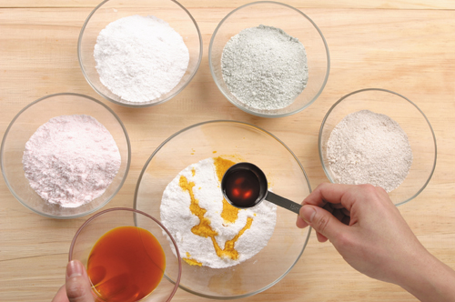
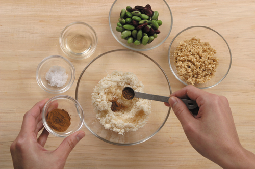
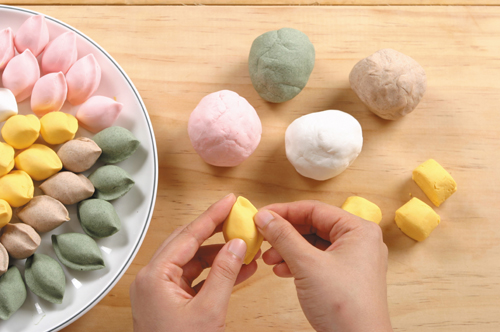
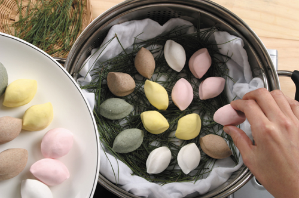
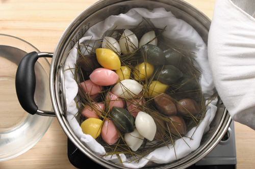

 1. Приготовьте воду на основе гардении: гардению разрежьте на две половины, опустите в воду и оставьте на 30 минут вымачиваться; а теперь на основе клубничного порошка: клубничный порошок насыпьте в воду и перемешайте.
 2. В рисовую муку добавьте соль и все вместе просейте через сито, затем разделите на 3 части и в каждую часть добавьте ингредиент для окрашивания теста, равномерно размешайте и пропустите через сито.
 3. В свежие зеленые бобы добавьте соль и половину количества кунжутных семян, измельчите, перемешайте с медом, сахаром и солью.
Кофейные бобы тщательно промойте, налейте воду (7:1) и замочите на 8 ч. Затем пожамкайте руками, снимите кожуру. Прополощите в воде и выложите в дуршлаг на 10 мин., чтобы стекла вода (Сосновые иголки тоже).
4. В каждую часть муки, окрашенной в цвет, добавьте воду и замесите тесто.
Налейте воду в пароварку, поставьте на сильный огонь, когда появится пар, постелите влажную салфетку, положите кофейные бобы и готовьте на пару в течение примерно 25 мин. Затем вытащите их и подсолите, пропустите через сито, добавьте мед и корицу и перемешайте.
 5. Рисовое тесто разделите на части по 15-16 г, положите начинку, заверните и придайте форму лепешек сонпхён (после добавление начинки – 20 г).
 6. В пароварку налейте воду, поставьте на сильный огонь, когда появится пар (примерно через 9 минут), постелите влажную салфетку, разложите сосновые иголки и выложите ровно лепешки. Готовьте на пару в течение 20 минут.
 7. Готовые рисовые лепешки вытащите, слегка прополосните в холодной воде, удалите сосновые иголки и смажьте кунжутным маслом.